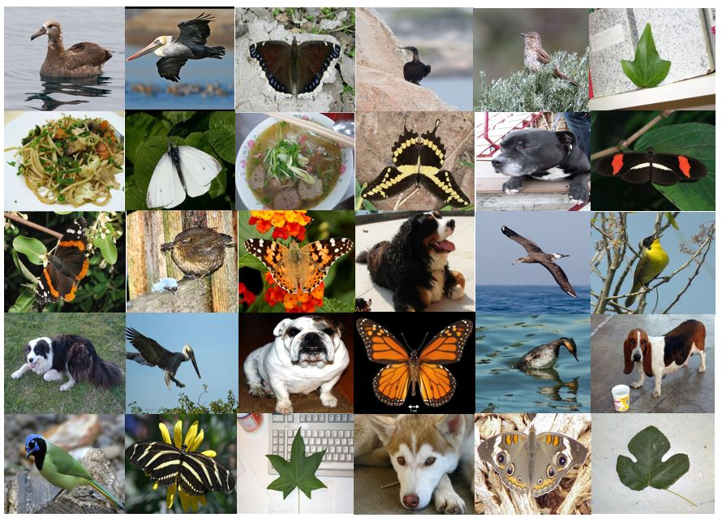
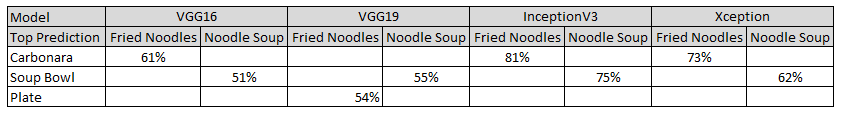
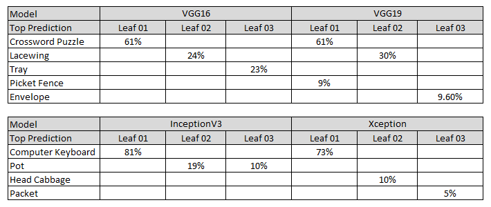
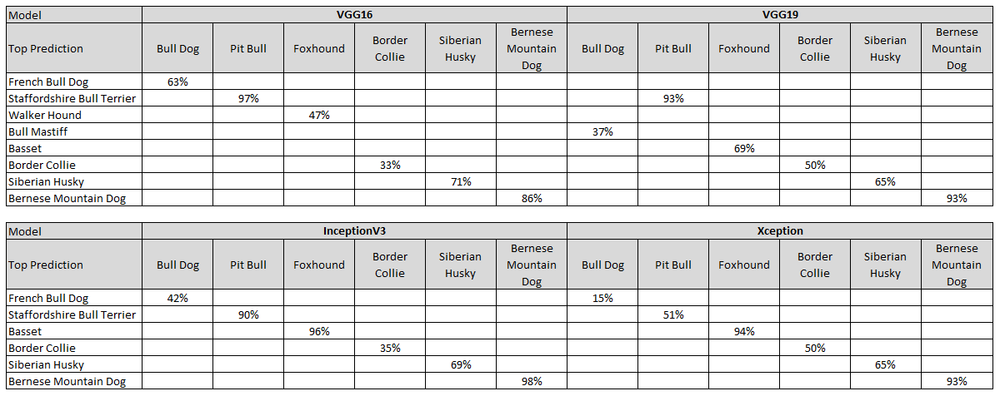
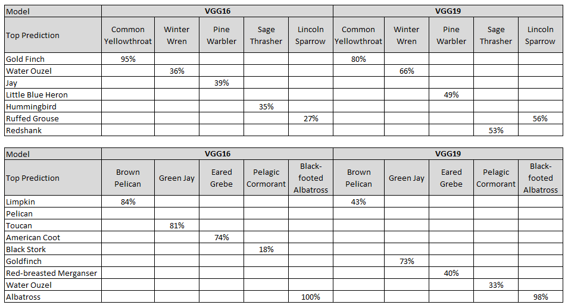
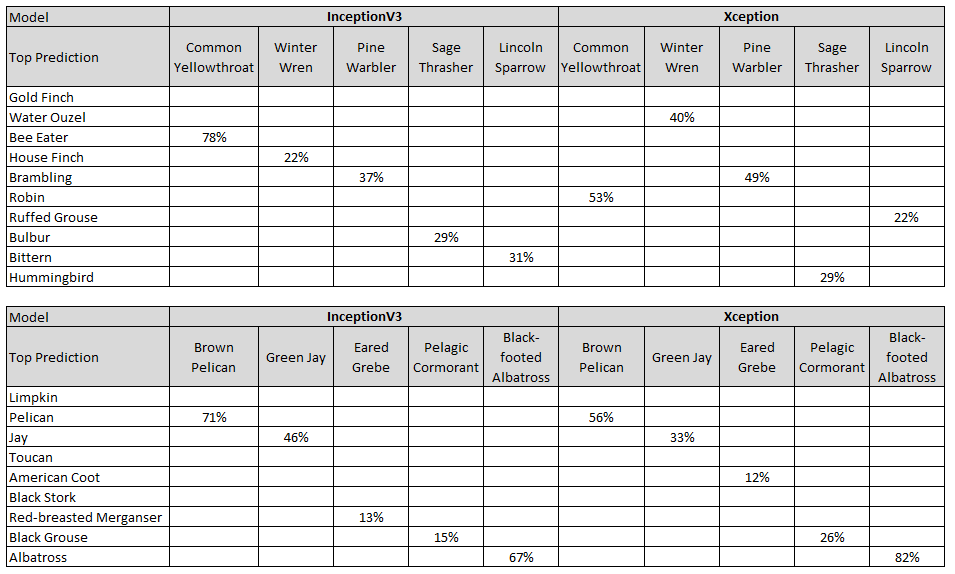
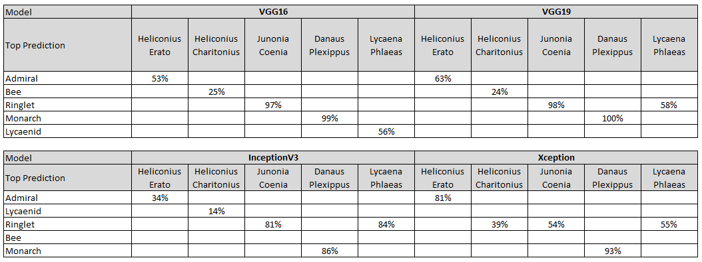
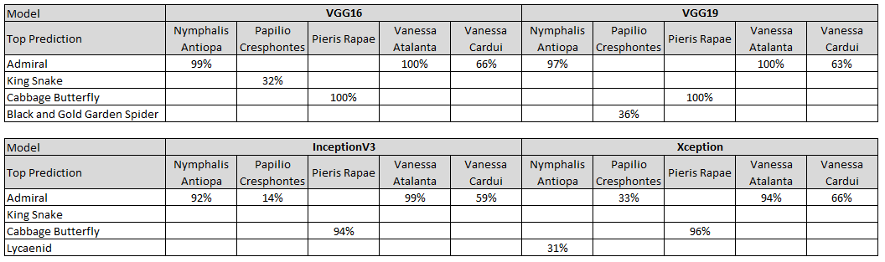

Image Classification with Transfer Learning
July 31, 2017

Deep Learning is an emerging field of research and Transfer Learning is one of its benefits. In image classification, for example, Transfer Learning makes use of features learned from one domain and used on another through feature extraction and fine-tuning. Convolutional Neural Network (also known as ConvNet) models trained on the ImageNet's million images with 1000 categories have been successfully used on other similar or dissimilar datasets, large or small, with great success. In particular, given the fact that data acquisition is expensive, small datasets can benefit from these pre-trained networks because the lower layers of these pre-trained networks already contain many generic features such as edge and color blob detectors and only the higher layers need to be trained on the new datasets.
According to Pan, et al, “research on transfer learning has attracted more and more attention since 1995 in different names: learning to learn, life-long learning, knowledge transfer, inductive transfer, multi-task learning, knowledge consolidation, context sensitive learning, knowledge-based inductive bias, meta learning, and incremental/cumulative learning”. They describe the difference between the learning processes of traditional and transfer learning techniques in the figure below.

Figure 1: Different learning processes between traditional machine learning and Transfer Learning Pan, et al
A classic demonstration of Transfer Learning is in image classification using Kaggle’s Dogs versus Cats dataset. Using 1000 cats and 1000 dogs from this dataset of 12,500 cats and 12,500 dogs, a three-layer ConvNet model has been shown to be capable of achieving 79-81% accuracy after 50 epochs. With a pre-trained ImageNet VGG16 model, the accuracy improves to 90-91%. Finally, with fine-tuning, the accuracy improves further to 94%. The VGG architecture is shown in the figure below.

Figure 2: VGG16/VGG19 Architecture
Other applications that have benefited from Transfer Learning include object detection, zero-shot learning, image captioning and video analysis.
There are several libraries in use today that support deep learning. Each has its own pros and cons. Some of the most commonly used ones for the Python Language are as follows:
- Theano - A Python library that allows one to define, optimize, and evaluate mathematical expressions involving multi-dimensional arrays.
- Tensorflow – Uses data flow graphs for numerical computation.
- Lasagne – A lightweight library to build and train neural networks in Theano.
- Caffe - A deep learning framework made with expression, speed, and modularity in mind.
- Caffe2 – A new lightweight, modular, and scalable deep learning framework.
- Microsoft Cognitive Toolkit – Uses directed graphs for describing neural networks. Previously known as CNTK.
- PyTorch – Builds neural networks using a technique called reverse-mode auto-differentiation.
- Keras - Keras is a high-level neural networks API, written in Python and capable of running on top of Tensorflow, Microsoft Cognitive Toolkit, or Theano. It was developed with a focus on enabling fast experimentation.
The Keras Deep Learning library for Python currently supports five models that have been pre-trained on ImageNet:
- VGG16 – A convolutional neural network model proposed by K. Simonyan and A. Zisserman from the University of Oxford in the paper “Very Deep Convolutional Networks for Large-Scale Image Recognition”.
- VGG19 – It is essentially the VGG16 model with three additional weight layers.
- Inception V3 - A convolutional neural network model from Google that scales up networks in ways that aim at utilizing the added computation as efficiently as possible by suitably factorized convolutions and aggressive regularization.
- ResNet50 – A residual learning framework from Microsoft Research that eases the training of deep networks. It reformulates the layers as learning residual functions with reference to the layer inputs, instead of learning unreferenced functions.
- Xception - Xception is an extension of the Inception architecture which replaces the standard Inception modules with depthwise separable convolutions.
This study used the Keras library to explore ImageNet’s pre-trained VGG16, VGG19, Inception V3 and Xception models to perform image classification on a variety of small datasets with different domains using Transfer Learning and Fine Tuning.
Training, Validating and Testing Datasets Process
The following steps were used in to train, validate and test the datasets in this project:
- Quick check Keras ImageNet pre-trained model's capability
- Load Data
- Define Model
- Compile Model
- Fit (Train) Model
- Evaluate Model
- Test Model
As a comparison, a one-layer and a six layer convolutional models were built to train and validate the two-class (Fried Noodles and Noodle Soup) image classifier and check them against the pre-trained models on training times and accuracies.
Quick Checkout on Keras ImageNet pre-trained Models
The purpose behind performing a quick checkout on the ImageNet pre-trained models was to determine if fine-tuning would be needed in addition to transfer learning using the following rationale recommended in the CS231n Stanford Convolutional Neural Networks for Visual Recognition:
- New dataset is small and similar to original dataset: Since the dataset is small, it is not a good idea to fine-tune the ConvNet due to overfitting concerns. Since the data is similar to the original data, the higher-level features in the ConvNet are expected to be relevant to this dataset as well. Hence, the best idea might be to train a linear classifier on the Convolutional Neural Network (CNN) codes.
- New dataset is large and similar to the original dataset: Since there is more data, a higher level of confidence is expected that there would be no overfitting when attempting to fine-tune through the full network.
- New dataset is small but very different from the original dataset: Since the dataset is small, it is likely best to only train a linear classifier. Since the dataset is very different, it might not be best to train the classifier form the top of the network, which contains more dataset-specific features. Instead, it might work better to train the Support Vector Machine (SVM) classifier from activations somewhere earlier in the network.
- New dataset is large and very different from the original dataset: Since the dataset is very large, it would be expected to train a ConvNet from scratch. However, in practice it is very often still beneficial to initialize with weights from a pretrained model. In this case, there would be enough data and confidence to fine-tune through the entire network.














Summary of Quick Checkout on ImageNet pre-trained Models
Noodles: Except for VGG19's top prediction being a "Plate" when attempting to recognize Fried Noodles sample image, its next best prediction was "Carbonara" which lined up well with the rest of the models.
Leaves: The Leaves dataset was deliberately chosen for this project because the leaves were laid against different backgrounds to complicate the recognition task. As expected, all the models were not able to identify them satisfactorily.
Dogs: All the models were able to recognize the sample images as dogs, though not ncessarily the correct breed. These results were expected as much data have been published on the use of pretrained ImageNet models to identify dogs versus cats.
Birds: Similarly, all the models were able to recognize the sample images as birds, though not ncessarily the correct breed.
Butterflies: The Inception and Xception models recognized all the sample images as some kind of butterflies. The VGG16 and VGG19 models identified the Heliconius Charitonius butterfly to be a bee. The VGG16 model identified the Papilo Cresphontes butterfly to be a king snake and the VGG19 model identified it to be a black and golden garden spider.
These results indicated that the pre-trained ImageNet models were capable of being used for Transfer Learning on the noodles, dogs, birds and butterflies datasets without the need for Fine Tuning based on the recommendation above. On the other hand, Fine Tuning might be needed on the leaves dataset. For the purpose of this project both Transfer Learning and Fine Tuning were performed to analyze the results and compare the differences in training times and test accuracies.
Hardware Details
Training Deep Learning networks require tremendous processing power to handle multiple matrix multiplications. GPUs are ideal for performing these operations. Facebook recently reported that its scientists were able to train nearly 1.3 million images in under one hour using 256 Tesla P100 GPUs that previously took days on a single system. In 2012 the ImageNet ILSVRC model was trained on 1.2 million images over the period of 2–3 weeks across multiple GPUs. For the small datasets used in this project having a Titan GTX 1080 GPU would have been able to train 8X faster than an i7 Intel CPU running at 3.5GHz.
However, no GPU was available for this project so the datasets were trained on two systems with Core i7 CPUs and on two systems with Core i5 CPUs.
Code Details
The following code applies to all the Keras pre-trained models except as noted otherwise.
Transfer Learning Phase
In the Transfer Learning phase only the new fully connected layer was trained on the features extracted from the pre-trained models.
Import Keras Libraries
Keras supports VGG16, VGG19, ResNet50, InceptionV3 and Xception models that have been pre-trained on ImageNet.
The Dense layer is the densely-connected Neural Network layer and the GlobalAveragePooling2D layer provides an average pooling for spatial data.
Keras has support for several optimizers that include SGD (Stochastic Gradient Descent), RMSprop, Adagrad, Adadelta, Adam, Adamax, Nadam and TFOptimizer (for Tensorflow).
The ImageDataGenerator module generates batches of tensor image data with real-time data augmentation to manage memory.
# import pertinent libraries
import os
import sys
import datetime
import glob as glob
import numpy as np
import cv2
# [Keras Models]
# import the Keras implementations of VGG16, VGG19, InceptionV3 and Xception models
# the model used here is VGG16
from keras.applications.vgg16 import VGG16, preprocess_input
from keras.models import Model
from keras.layers import Dense, GlobalAveragePooling2D
from keras.preprocessing.image import ImageDataGenerator, array_to_img, img_to_array, load_img
from keras.optimizers import SGD
import tensorflow
from scipy.interpolate import spline
import pandas as pd
import matplotlib.pyplot as plt
%matplotlib inlineDatasets
The datasets used in this project ranged from a simple two-class (Fried Noodles and Noodle Soup) image classification to a ten-class (Variety of butterflies) image classification.
Noodles Data - Open Images is a dataset of ~9 million URLs to images that have been annotated with labels spanning over 6000 categories. "Krasin I., Duerig T., Alldrin N., Veit A., Abu-El-Haija S., Belongie S., Cai D., Feng Z., Ferrari V., Gomes V., Gupta A., Narayanan D., Sun C., Chechik G, Murphy K. OpenImages: A public dataset for large-scale multi-label and multi-class image classification, 2016. Available from https://github.com/openimages".
Leaves Data - Leaves dataset taken by Markus Weber. California Institute of Technology PhD student under Pietro Perona. 186 images of leaves against different backgrounds. Approximate scale normalisation. Jpeg format. Taken in and around Caltech. 896 x 592 jpg format.
Dogs Data - Open Images is a dataset of ~9 million URLs to images that have been annotated with labels spanning over 6000 categories. "Krasin I., Duerig T., Alldrin N., Veit A., Abu-El-Haija S., Belongie S., Cai D., Feng Z., Ferrari V., Gomes V., Gupta A., Narayanan D., Sun C., Chechik G, Murphy K. OpenImages: A public dataset for large-scale multi-label and multi-class image classification, 2016. Available from https://github.com/openimages".
Birds Data Welinder P., Branson S., Mita T., Wah C., Schroff F., Belongie S., Perona, P. “Caltech-UCSD Birds 200”. California Institute of Technology. CNS-TR-2010-001. 2010.
Butterflies Data Josiah Wang, Katja Markert, and Mark Everingham, Learning Models for Object Recognition from Natural Language Descriptions, In Proceedings of the 20th British Machine Vision Conference (BMVC2009)
Load Training and Validation Datasets
The raw dataset was first split into a training dataset with 80% of the images and a validation dataset with the remaining 20%. Then, 10% of this training dataset was allocated for prediction purposes. This test dataset was not part of the training or validating datasets
# split raw dataset into 80% for training and 20% for validating
train, validate = train_test_split(x, test_size = 0.2, random_state = 42)
# split training dataset into 90% for training and 10% for predicting
train, test = train_test_split(x, test_size = 0.1, random_state = 42)The training dataset was kept in the 'data/train' folder and the validation dataset in the 'data/validate' folder.
Typical input image sizes are 224×224, 227×227, 256×256, and 299×299. VGG16, VGG19 accept 224×224 input images while Inception V3 and Xception require 299×299 pixel inputs.
The number of epochs can range from as low as 5 to as high as 40,000 depeneding upon the dataset in question. For this project, 20 epochs were used.
Batch size is defined as the number of samples propagating through the network. A typical batch size of 32 is a good default value.
# [Dataset]
# image dimensions for VGG16, VGG19 are 224, 224
# image dimensions for InceptionV3 and Xception are 299, 299
img_width, img_height = 224, 224
train_dir = 'data/train'
validate_dir = 'data/validate'
nb_epochs = 20
batch_size = 32
nb_classes = len(glob.glob(train_dir + '/*'))
# get number of images in training directory
nb_train_samples = 0
for r, dirs, files in os.walk(train_dir):
for dr in dirs:
nb_train_samples += len(glob.glob(os.path.join(r, dr + "/*")))
# get number of images in validation directory
nb_validate_samples = 0
for r, dirs, files in os.walk(validate_dir):
for dr in dirs:
nb_validate_samples += len(glob.glob(os.path.join(r, dr + "/*")))Preprocessing and augmenting the Datasets
Data preparation is almost always required when working with any data analysis, machine learning, neural network or deep learning models. It becomes even more important to augment data in the case of image recognition. Keras provides the ImageDataGenerator class that defines the configuration for image data preparation and augmentation. It defines the arguments of the ImageDataGenerator class as follows:
rotation_range is a value in degrees (0-180), a range within which to randomly rotate pictures
width_shift and height_shift are ranges (as a fraction of total width or height) within which to randomly translate pictures vertically or horizontally
rescale is a value by which the data is multiplied before any other processing. The original images consist of RGB coefficients in the 0-255, but such values would be too high for the models to process (given a typical learning rate), values are targeted between 0 and 1 instead by scaling with a 1/255. factor.
shear_range is for randomly applying shearing transformations
zoom_range is for randomly zooming inside pictures
horizontal_flip is for randomly flipping half of the images horizontally, relevant when there are no assumptions of horizontal assymetry (e.g. real-world pictures).
fill_mode is the strategy used for filling in newly created pixels, which can appear after a rotation or a width/height shift.
The figure below displays the effect of applying rotation, width and height shifts, shear, zoom , fill mode and horizontal flip on a random butterfly image:

The images used in the datasets underwent the following data augmentation when using VGG16 and VGG19 models. The InceptionV3 and Xception models have a built-in preprocessing function and did not need the rescaling feature.
# data pre-processing for training
train_datagen = ImageDataGenerator(
rescale = 1./255,
rotation_range = 20,
width_shift_range = 0.2,
height_shift_range = 0.2,
shear_range = 0.2,
zoom_range = 0.2,
fill_mode = 'nearest',
horizontal_flip = True)
# data pre-processing for validation
validate_datagen = ImageDataGenerator(
rescale = 1./255,
rotation_range = 20,
width_shift_range = 0.2,
height_shift_range = 0.2,
shear_range = 0.2,
zoom_range = 0.2,
fill_mode = 'nearest',
horizontal_flip = True)The train_datagen.flow and validate_datagen.flow methods read the images found in the subfolders of the the 'data/train' and 'data/validate' folders and generated batches of augmented image data for use in the training and validating process. Batch size used was 32 for all datasets unless otherwise specified.
# generate and store training data
train_generator = train_datagen.flow_from_directory(
train_dir,
target_size = (img_width, img_height),
batch_size = batch_size)
# generate and store validation data
validate_generator = validate_datagen.flow_from_directory(
validate_dir,
target_size = (img_width, img_height),
batch_size = batch_size)Define the Model
Since ImageNet pre-trained models were used on the datasets in this project the model definition process was relatively simple. The top layer of the pre-trained model was removed and replaced with a new fully connected layer with a Softmax classifier.
GlobalAveragePooling2D progressively reduces the spatial size and the amount of parameters and computation in the network as well as control overfitting. The Dense layer is the densely-connected Neural Network layer of size 1024 with the Rectified Linear Unit (relu) as the activator.
# set up transfer learning on pre-trained ImageNet VGG19 model - remove fully connected layer and replace
# with softmax for classifying the number of classes in the dataset
vgg19_model = VGG19(weights = 'imagenet', include_top = False)
x = vgg19_model.output
x = GlobalAveragePooling2D()(x)
x = Dense(1024, activation='relu')(x)
predictions = Dense(nb_classes, activation = 'softmax')(x)
model = Model(input = vgg19_model.input, output = predictions)Freeze the Layers of the Model
Prior to compiling the model, all the layers of the pre-trained model were frozen. Only the Dense layer of the new model needed to be trained.
# freeze all layers of the pre-trained InceptionV3 model
for layer in vgg19_model.layers:
layer.trainable = FalseLearning Process Animation
Animations that may help one's intuitions about the learning process dynamics.

Above: Contours of a loss surface and time evolution of different optimization algorithms. Notice the "overshooting" behavior of momentum-based methods, which make the optimization look like a ball rolling down the hill.

Above: A visualization of a saddle point in the optimization landscape, where the curvature along different dimension has different signs (one dimension curves up and another down). Notice that SGD has a very hard time breaking symmetry and gets stuck on the top. Conversely, algorithms such as RMSprop will see very low gradients in the saddle direction. Due to the denominator term in the RMSprop update, this will increase the effective learning rate along this direction, helping RMSProp proceed. Source: CS231n. Images credit: Alec Radford.
Compile the Model
RMSProp with its default values was the optimizer used on all the datasets during the transfer learning phase. Keras recommends leaving the parameters at their default values:
keras.optimizers.RMSprop(lr=0.001, rho=0.9, epsilon=1e-08, decay=0.0)
lr: float >= 0. Learning rate.
rho: float >= 0.
epsilon: float >= 0. Fuzz factor.
decay: float >= 0. Learning rate decay over each update.
For the two class Noodles dataset, loss was defined as 'binary_crossentropy'. For all other datasets the loss was defined as 'categorical_crossentropy' which is a one-hot vector of the number of classes used in the classification. The metrics argument provided the classification accuracy.
# compile the new model using a RMSProp optimizer
model.compile(optimizer = 'rmsprop',
loss = 'categorical_crossentropy',
metrics = ['accuracy'])Fit (Train) the Model
Since the datasets were trained and validated on systems with different CPUs and RAM, the training and validating times were collected and reported. Number of epochs was set to 20 for all datasets unless otherwise specified. All training and validation images were used for training and validating, respectively.
# fit the model, log the results and the training time
now = datetime.datetime.now
t = now()
transfer_learning_history = model.fit_generator(
train_generator,
nb_epoch = nb_epochs,
samples_per_epoch = nb_train_samples,
validation_data = validate_generator,
nb_val_samples = nb_validate_samples,
class_weight='auto')
print('Training time: %s' % (now() - t))Epoch 1/20
592/592 [==============================] - 439s - loss: 2.1416 - acc: 0.2686 - val_loss: 1.9227 - val_acc: 0.1716
Epoch 2/20
592/592 [==============================] - 433s - loss: 1.5334 - acc: 0.5034 - val_loss: 1.5641 - val_acc: 0.4083
Epoch 3/20
592/592 [==============================] - 435s - loss: 1.2112 - acc: 0.6351 - val_loss: 1.2631 - val_acc: 0.5562
Epoch 4/20
592/592 [==============================] - 437s - loss: 0.9724 - acc: 0.7196 - val_loss: 0.9148 - val_acc: 0.7456
Epoch 5/20
592/592 [==============================] - 434s - loss: 0.8360 - acc: 0.7568 - val_loss: 0.8543 - val_acc: 0.7337
.
.
.
Epoch 16/20
592/592 [==============================] - 435s - loss: 0.2825 - acc: 0.9206 - val_loss: 0.4937 - val_acc: 0.8225
Epoch 17/20
592/592 [==============================] - 481s - loss: 0.2692 - acc: 0.9274 - val_loss: 0.4280 - val_acc: 0.8521
Epoch 18/20
592/592 [==============================] - 434s - loss: 0.2565 - acc: 0.9189 - val_loss: 0.4483 - val_acc: 0.8698
Epoch 19/20
592/592 [==============================] - 433s - loss: 0.2495 - acc: 0.9172 - val_loss: 0.4029 - val_acc: 0.8521
Epoch 20/20
592/592 [==============================] - 435s - loss: 0.2510 - acc: 0.9155 - val_loss: 0.3521 - val_acc: 0.8935
Training time: 2:25:45.271227Evaluate the Model
# evaluate the performance the new model and report the results
score = model.evaluate_generator(validate_generator, nb_validate_samples/batch_size)
print("Test Score:", score[0])
print("Test Accuracy:", score[1])
Test Score: 0.336898863316
Test Accuracy: 0.90625Save the model
# save transfer learning model for offline prediction purposes
model.save('butterflies_vgg19_model_tl.h5')Plot the test results
The model.fit_generator function returns a history object that contains information on the training and validating accuracy and loss. This information was plotted to provide a graphical representation of the training versus validating test results.
xfer_acc = transfer_learning_history.history['acc']
val_acc = transfer_learning_history.history['val_acc']
xfer_loss = transfer_learning_history.history['loss']
val_loss = transfer_learning_history.history['val_loss']
epochs = range(len(xfer_acc))
x = np.array(epochs)
y = np.array(xfer_acc)
x_smooth = np.linspace(x.min(), x.max(), 500)
y_smooth = spline(x, y, x_smooth)
plt.plot(x_smooth, y_smooth, 'r-', label = 'Training')
x1 = np.array(epochs)
y1 = np.array(val_acc)
x1_smooth = np.linspace(x1.min(), x1.max(), 500)
y1_smooth = spline(x1, y1, x1_smooth)
plt.plot(x1_smooth, y1_smooth, 'g-', label = 'Validation')
plt.title('Transfer Learning - Training and Validation Accuracy')
plt.legend(loc = 'lower left', fontsize = 9)
plt.xlabel('Epochs')
plt.ylabel('Accuracy')
plt.ylim(0,1.05)
plt.figure()
x = np.array(epochs)
y = np.array(xfer_loss)
x_smooth = np.linspace(x.min(), x.max(), 500)
y_smooth = spline(x, y, x_smooth)
plt.plot(x_smooth, y_smooth, 'r-', label = 'Training')
x1 = np.array(epochs)
y1 = np.array(val_loss)
x1_smooth = np.linspace(x1.min(), x1.max(), 500)
y1_smooth = spline(x1, y1, x1_smooth)
plt.plot(x1_smooth, y1_smooth, 'g-', label = 'Validation')
plt.title('Transfer Learning - Training and Validation Loss')
plt.legend(loc = 'upper right', fontsize = 9)
plt.xlabel('Epochs')
plt.ylabel('Loss')
plt.ylim(0,max(y1))
plt.show()
Predict Unseen Images
The model.predict function generates output predictions for the input images which are retrieved from the dataset's test folder.
num_images = len(glob.glob("butterflies_test/*.jpg"))
predict_files = glob.glob("butterflies_test/*.jpg")
im = cv2.imread(predict_files[0])
im = cv2.cvtColor(im, cv2.COLOR_BGR2RGB)
im = cv2.resize(im, (256, 256)).astype(np.float32)
im = np.expand_dims(im, axis = 0)/255
predictor, image_id = [], []
for i in predict_files:
im = cv2.imread(i)
im = cv2.resize(cv2.cvtColor(im, cv2.COLOR_BGR2RGB), (256, 256)).astype(np.float32) / 255.0
im = np.expand_dims(im, axis =0)
outcome = [np.argmax(model.predict(im))]
predictor.extend(list(outcome))
image_id.extend([i.rsplit("\\")[-1]])
final = pd.DataFrame()
final["id"] = image_id
final["Butterfly"] = predictor
classes = train_generator.class_indices
classes = {value : key for key, value in classes.items()}
final["Butterfly"] = final["Butterfly"].apply(lambda x: classes[x])
final.head(num_images)
Save the Prediction Results
final.to_csv("csv/butterflies_with_pretrained_vgg19_model_tl_test.csv", index=False)Fine Tuning Phase
In the Fine Tuning phase some or none of the lower convolutional layers of the model were prevented from training depending upon the results from the Transfer Learning phase.
Determine Layers to train, Compile Model, Fit Model
In the fine tuning mode.compile function, the optimizer used was Stochastic Gradient Descent (SGD) with a learning rate of 0.0001 and a momentum of 0.9.
# Step 1 - Set up fine tuning on pre-trained ImageNet vgg19 model - train all layers for VGG16 and VGG19 models but only the Layers from
# 94 and above for the Inception V3 and Xception models
for layer in model.layers:
layer.trainable = True
# Step 2 - Compile the revised model using SGD optimizer with a learing rate of 0.0001 and a momentum of 0.9
model.compile(optimizer = SGD(lr = 0.0001, momentum=0.9),
loss = 'categorical_crossentropy',
metrics = ['accuracy'])
# Step 3 - Fit the revised model, log the results and the training time
now = datetime.datetime.now
t = now()
fine_tuning_history = model.fit_generator(
train_generator,
nb_epoch = nb_epochs,
samples_per_epoch = nb_train_samples,
validation_data = validate_generator,
nb_val_samples = nb_validate_samples,
class_weight='auto')
print('Training time: %s' % (now() - t))Epoch 1/20
592/592 [==============================] - 1111s - loss: 0.1320 - acc: 0.9578 - val_loss: 0.2041 - val_acc: 0.9349
Epoch 2/20
592/592 [==============================] - 1105s - loss: 0.0874 - acc: 0.9713 - val_loss: 0.1727 - val_acc: 0.9172
Epoch 3/20
592/592 [==============================] - 1061s - loss: 0.0436 - acc: 0.9899 - val_loss: 0.1797 - val_acc: 0.9172
Epoch 4/20
592/592 [==============================] - 1107s - loss: 0.0427 - acc: 0.9882 - val_loss: 0.1557 - val_acc: 0.9527
Epoch 5/20
592/592 [==============================] - 1062s - loss: 0.0317 - acc: 0.9949 - val_loss: 0.0987 - val_acc: 0.9586
.
.
.
Epoch 16/20
592/592 [==============================] - 1167s - loss: 0.0065 - acc: 1.0000 - val_loss: 0.0654 - val_acc: 0.9645
Epoch 17/20
592/592 [==============================] - 1160s - loss: 0.0108 - acc: 0.9966 - val_loss: 0.0390 - val_acc: 0.9822
Epoch 18/20
592/592 [==============================] - 1107s - loss: 0.0034 - acc: 1.0000 - val_loss: 0.0606 - val_acc: 0.9704
Epoch 19/20
592/592 [==============================] - 1112s - loss: 0.0037 - acc: 1.0000 - val_loss: 0.0924 - val_acc: 0.9527
Epoch 20/20
592/592 [==============================] - 1155s - loss: 0.0071 - acc: 0.9983 - val_loss: 0.0674 - val_acc: 0.9704
Training time: 6:14:59.254681Evaluate the Model
# evaluate the performance the new model and report the results
score = model.evaluate_generator(validate_generator, nb_validate_samples/batch_size)
print("Test Score:", score[0])
print("Test Accuracy:", score[1]) Test Score: 0.0136573100463
Test Accuracy: 1.0Save the Fine Tuning Model
# save fine-tuning model for offline prediction purposes
model.save('butterflies_vgg19_model_ft.h5')Plot the Test Results
ft_acc = fine_tuning_history.history['acc']
val_acc = fine_tuning_history.history['val_acc']
ft_loss = fine_tuning_history.history['loss']
val_loss = fine_tuning_history.history['val_loss']
epochs = range(len(ft_acc))
x = np.array(epochs)
y = np.array(xfer_acc)
x_smooth = np.linspace(x.min(), x.max(), 300)
y_smooth = spline(x, y, x_smooth)
plt.plot(x_smooth, y_smooth, 'r-', label = 'Training')
x1 = np.array(epochs)
y1 = np.array(val_acc)
x1_smooth = np.linspace(x1.min(), x1.max(), 300)
y1_smooth = spline(x1, y1, x1_smooth)
plt.plot(x1_smooth, y1_smooth, 'g-', label = 'Validation')
plt.title('Fine-Tuning - Training and Validation Accuracy')
plt.legend(loc = 'lower left', fontsize = 9)
plt.xlabel('Epochs')
plt.ylabel('Accuracy')
plt.ylim(0,1.02)
plt.figure()
x = np.array(epochs)
y = np.array(xfer_loss)
x_smooth = np.linspace(x.min(), x.max(), 300)
y_smooth = spline(x, y, x_smooth)
plt.plot(x_smooth, y_smooth, 'r-', label = 'Training')
x1 = np.array(epochs)
y1 = np.array(val_loss)
x1_smooth = np.linspace(x1.min(), x1.max(), 300)
y1_smooth = spline(x1, y1, x1_smooth)
plt.plot(x1_smooth, y1_smooth, 'g-', label = 'Validation')
plt.title('Fine-Tuning - Training and Validation Loss')
plt.legend(loc = 'upper right', fontsize = 9)
plt.xlabel('Epochs')
plt.ylabel('Loss')
plt.ylim(0,2)
plt.show()
Predict Unseen Images
The model.predict function generates output predictions for the input images which are retrieved from the dataset's test folder.
num_images = len(glob.glob("butterflies_test/*.jpg"))
predict_files = glob.glob("butterflies_test/*.jpg")
im = cv2.imread(predict_files[0])
im = cv2.cvtColor(im, cv2.COLOR_BGR2RGB)
im = cv2.resize(im, (256, 256)).astype(np.float32)
im = np.expand_dims(im, axis = 0)/255
predictor, image_id = [], []
for i in predict_files:
im = cv2.imread(i)
im = cv2.resize(cv2.cvtColor(im, cv2.COLOR_BGR2RGB), (256, 256)).astype(np.float32) / 255.0
im = np.expand_dims(im, axis =0)
outcome = [np.argmax(model.predict(im))]
predictor.extend(list(outcome))
image_id.extend([i.rsplit("\\")[-1]])
final = pd.DataFrame()
final["id"] = image_id
final["Butterfly"] = predictor
classes = train_generator.class_indices
classes = {value : key for key, value in classes.items()}
final["Butterfly"] = final["Butterfly"].apply(lambda x: classes[x])
final.head(num_images)
Save the Prediction Results
final.to_csv("csv/butterflies_with_pretrained_vgg19_model_ft_test.csv", index=False)One-layer Convolutional Neural Network (CNN) Model
A simple one-layer CNN model was built, trained and validated on the two-class Noodles dataset. The average training time for one epoch took 33 minutes on an Intel Core i7 CPU @ 3.40GhHz system with 16GB RAM. Ten epochs were performed and the model attained 54.6% test validation accuracy at the end of the tenth epoch.
def cnn_model():
model = Sequential()
model.add(Conv2D(32, (3, 3), padding='same',
input_shape=(img_width, img_height, 3),
activation='relu'))
model.add(MaxPooling2D(pool_size=(2, 2)))
model.add(Flatten())
model.add(Dense(1024, activation='relu'))
model.add(Dropout(0.5))
model.add(Dense(num_classes, activation='softmax'))
return modelEpoch 1/10
251/251 [==============================] - 2018s - loss: 7.1477 - acc: 0.5552 - val_loss: 7.2660 - val_acc: 0.5492
Epoch 2/10
251/251 [==============================] - 2029s - loss: 7.2117 - acc: 0.5526 - val_loss: 7.2686 - val_acc: 0.5490
Epoch 3/10
251/251 [==============================] - 1988s - loss: 7.1967 - acc: 0.5535 - val_loss: 7.2686 - val_acc: 0.5490
Epoch 4/10
251/251 [==============================] - 2009s - loss: 7.1848 - acc: 0.5542 - val_loss: 7.2493 - val_acc: 0.5502
Epoch 5/10
251/251 [==============================] - 1939s - loss: 7.1903 - acc: 0.5539 - val_loss: 7.2975 - val_acc: 0.5472
Epoch 6/10
251/251 [==============================] - 1939s - loss: 7.1996 - acc: 0.5533 - val_loss: 7.2782 - val_acc: 0.5484
Epoch 7/10
251/251 [==============================] - 1925s - loss: 7.1875 - acc: 0.5541 - val_loss: 7.2589 - val_acc: 0.5496
Epoch 8/10
251/251 [==============================] - 1929s - loss: 7.1911 - acc: 0.5538 - val_loss: 7.2493 - val_acc: 0.5502
Epoch 9/10
251/251 [==============================] - 1933s - loss: 7.1915 - acc: 0.5538 - val_loss: 7.3071 - val_acc: 0.5467
Epoch 10/10
251/251 [==============================] - 1920s - loss: 7.2041 - acc: 0.5530 - val_loss: 7.3168 - val_acc: 0.5461
Training time: 5:27:16.009156
Test Score: 8.39957097551
Test Accuracy: 0.478873239856Six-layers Convolutional Neural Network (CNN) Model
A sequential six-layer CNN model was built, trained and validated on the two-class Noodles dataset. The average training time for one epoch took 2.8 hours on an Intel Core i7 CPU @ 3.40GhHz system with 16GB RAM. Hence, only five epochs were performed. The model attained 61.7% test validation accuracy at the end of the fifth epoch.
# define the model
def convnet_model():
model = Sequential()
model.add(Conv2D(32, (3, 3), padding='same',
input_shape=(3, img_width, img_height),
activation='relu'))
model.add(Conv2D(32, (3, 3), activation='relu'))
model.add(MaxPooling2D(pool_size=(2, 2)))
model.add(Dropout(0.2))
model.add(Conv2D(64, (3, 3), padding='same',
activation='relu'))
model.add(Conv2D(64, (3, 3), activation='relu'))
model.add(MaxPooling2D(pool_size=(2, 2)))
model.add(Dropout(0.2))
model.add(Conv2D(128, (3, 3), padding='same',
activation='relu'))
model.add(Conv2D(128, (3, 3), activation='relu'))
model.add(MaxPooling2D(pool_size=(2, 2)))
model.add(Dropout(0.2))
model.add(Flatten())
model.add(Dense(512, activation='relu'))
model.add(Dropout(0.5))
model.add(Dense(num_classes, activation='softmax'))
return modelEpoch 1/5
240/240 [==============================] - 10113s - loss: 0.6345 - acc: 0.6354 - val_loss: 0.7838 - val_acc: 0.5294
Epoch 2/5
240/240 [==============================] - 10044s - loss: 0.5645 - acc: 0.7119 - val_loss: 0.7600 - val_acc: 0.5590
Epoch 3/5
240/240 [==============================] - 10203s - loss: 0.5811 - acc: 0.6991 - val_loss: 0.7712 - val_acc: 0.5851
Epoch 4/5
240/240 [==============================] - 10318s - loss: 0.4906 - acc: 0.7728 - val_loss: 0.8033 - val_acc: 0.6004
Epoch 5/5
240/240 [==============================] - 10052s - loss: 0.5066 - acc: 0.7581 - val_loss: 0.8434 - val_acc: 0.6170Summary of Test Results
The table below shows the the test accuracies, training times and the dataset image sizes for all the datasets used in this project. The highlighted cells indicate no improvement or there was a loss in test accuracy from Transfer Learning to Fine Tuning.

Transfer Learning
Noodles Dataset: All four models achieved greater than 85% test accuracy with the Xception model performing the best at 100%.
Leaves Dataset: Three of the four models achieved greater than 91% test accuracy with the VGG model performing the best at 100% and the Inception V3 model coming in second best at 97.3%. The Xception model that performed superbly on the Noodles dataset was only capable of achieving 70.3%.
Dogs Dataset: The VGG16 and VGG19 models had a very difficult time with this dataset - 18.8% for VGG19 and 35.9% for VGG16. The Inception V3 model performed the best with 87% followed by the Xception model with 76.6%.
Birds Dataset: Again, the VGG16 and VGG19 models performed poorly on the dataset at 20%. The Inception V3 performed slightly better at 40% and the Xception model maxed out at 60%.
Butterflies Dataset: All four models achieved greater than 87% test accuracy with both the Inception V3 and the Xception models performing the best at 100%.
Overall, in training accuracy, the Inception V3 model performed the best with an average of 82% followed by Xception at 81.3%, VGG16 at 64.2% and VGG19 at 63%.
The test results also showed that all the Transfer Learning pre-trained models performed better than the one-layer and the six-layer CNN models, both in validation accuracy and training times.
Fine Tuning
Noodles Dataset: Both the VGG16 and the Inception V3 models benefited from fine tuning. The VGG16 model increased its accuracy from 85.7% to 93.8% and the Inception V3 model from 85.7% to 90.6%. On the other hand, both the VGG19 and the Xception models saw a degradation in test accuracy. The VGG19 model's accuracy dropped from 85.7% to 78.1% and the Xception model reported a drop from 100% to 84.4%.
Leaves Dataset: Both the VGG16 and the Xception models benefited from fine tuning. The VGG16 model increased its accuracy from 91.9% to 100% and the Xception model from 70.3% to 81.1%. On the other hand, both the VGG19 and the Inception V3 models saw a degradation in test accuracy. The VGG19 model's accuracy dropped from 100% to 97.3% and the Inception V3 model reported a drop from 97.3% to 94.6%.
Dogs Dataset: Three of the four models benefited significantly from fine tuning. The VGG16 model reported an improvement from 35.9% to 63%. The VGG19 model reported an increase from 18.8% to 68.1%, a huge improvement. Similarly, the Xception model witnessed an improvement from 76.6% to 97.8%. Only the Inception V3 model saw a slight reduction in test accuracy from 87% to 84.8%.
Birds Dataset: Two of the four models benefited significantly from fine tuning. The VGG16 model improved from 20% to 59.4% and the Inception V3 model from 40% to 75%, an almost three-fold improvement. The VGG19 model doubled its test accuracy from 20% to 43.8%. The Xception model improved the least among the four models from 60% to 68.8%.
Butterflies Dataset: All four models either improved or reported no change in their test accuracies. Both the VGG16 and VGG19 models witnessed an improvement, from 87.5 to 96.9% for the VGG16 model and from 90.6% to 100% for the VGG19 model. Both the Inception V3 and the Xception models reported no change in their test accuracies at 100%.
Overall, in training accuracy, the Inception V3 model performed the best with an average of 89% followed by Xception at 86.4%, VGG16 at 82.6% and VGG19 coming in last at 77.5%.
Transfer Learning versus Fine Tuning Discussion
Model training times for Fine Tuning were expected to take longer than the ones used in Transfer Learning. Fine tuning was only recommended for small datasets that were different from the original dataset, i.e., if the pre-trained ImageNet models were not able to identify random samples with reasonable confidence. The Leaves dataset was the only dataset among the four datasets that had this issue. Yet, during the Transfer Learning stage, three of the four models achieved gretaer than 91% test accuracy with the VGG model performing the best at 100% and the Inception V3 model coming in second best at 97.3%. The Xception model that performed superbly on the Noodles dataset was only capable of achieving 70.3%. The Xception model did improve its accuracy by 10.8% with an additional 1:06 hours of extra training.
Conversely, the Dogs and Birds datasets did not perform well in the Transfer Learning phase even though the pre-trained models were able to identify the random samples as dogs and birds but not necessarily the correct breeds. Hence, these datasets were subjected to fine tuning and the test accuracies did improve.
Resources
There is a wealth of information on the Web on Deep Learning and its related topics. The highly recommended courses on Visual Recognition are the Stanford CS class CS231n: Convolutional Neural Networks for Visual Recognition and Coursera's Neural Networks for Machine Learning.
Next Steps
- This study showed that pre-trained ImageNet CNN models, such as the VGG16, VGG19, Inception V3 and Xception models can be exploited for use as image classifiers on different, but related datasets. The Caffe Model Zoo has several pretrained models available for use on different datasets which could add additional value to this project.
- The GPU available for use in this study was the Nvidia GeForce GTX470 and did not meet the minimum Compute Unified Device Architecture (CUDA) compute capability of 3.0 for it to be used to reduce training times. As an alternative, Amazon Web Services (AWS) EC2, Google Cloud Platform and Paperspace offer Virtual Machines (VM) with multiple GPU support for use in deep learning projects.
- ResNet50 is the CNN model that the Microsoft team developed to win the Large Scale Visual Recognition Challenge (ILSRVC) 2015 competition and which surpassed the human performance on the ImageNet dataset. However, it failed to perform as well as any of the other four models used in this project. This needs to be further investigated.
- Tensorflow from Google is another very popular library used for computation in neural networks. The Keras library has the capability to run on top of Tensorflow or Theano. It would be interesting to compare the performance of the pre-trained ImageNet Inception V3 model using Tensorflow against Keras.
- CrowdAnalytix recently conducted an image classification competition on themes from mobile phone case images. The winner of the competition achieved 85% accuracy but the code was not released for public view. For the purpose of this study the dataset used in the competition was subjected to Transfer Learning and Fine Tuning using the pre-trained ImageNet Inception V3 model. After 20 epochs the test accuracy was 67% and after fine tuning it was at 72%. It is possible that the accuracy might have improved with more epochs. This information could help manufacturers of mobile phone cases reduce operation costs in warranty claims. Typically, a dissatisfied customer would send a photo of his/her damaged case to the manufacturer for replacement or refund under a warranty claim. Since the photo is an image that automatically becomes part of the dataset without any additional handling or processing, a pre-trained ImageNet or other large scale dataset such as Open Images could be trained on this warranty claims dataset to perform image classification to determine the validity of the claim.
- Develop a Web application that allows a user to upload a candidate image for online image classification.
- The Keras Library version used was 1.2.2. The Tensorflow libary version was 0.12. A plan is in the works to support the latest versions of Keras and Tensorflow.
Acknowledgement
Credit goes to my Springboard mentor, Alex Chao, for his invaluable guidance and feedback on the progress of this project.